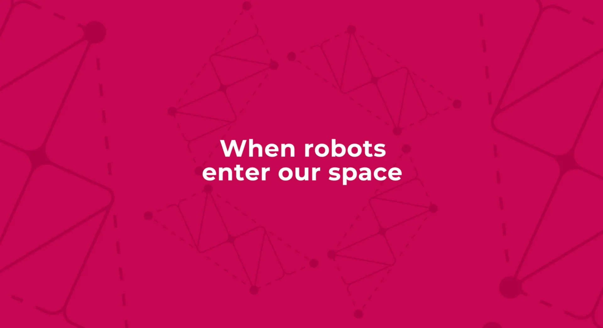

Cultura robotica al Gazometro
Un appuntamento per portare la cultura robotica fuori dai laboratori. Il racconto della serata in video.

Durata 16:24
WeRo ha accompagnato il progetto dalla strategia al racconto: un lavoro condiviso tra ricerca, comunicazione e creatività per rendere comprensibile a tutti una tecnologia complessa.
Il punto di partenza è stato l’ascolto: interviste con il team di ricerca, analisi del linguaggio usato finora e dei pubblici a cui il progetto vuole parlare.
Altri progetti
Vuoi diventare un nostro partner?
Contattaci